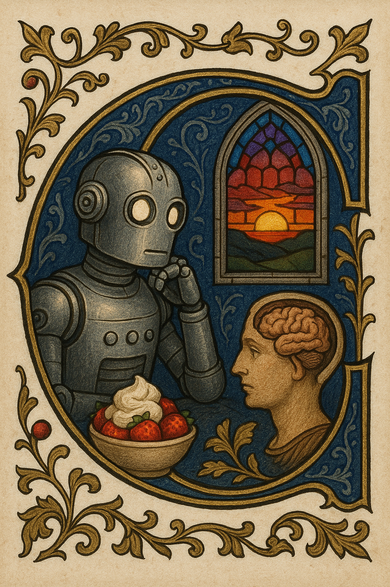

The Catholic Church vs. the Turing Test
by Richard Marmorstein - June 28, 2025
← Home
an machines think? Alan Turing wrote in “Computing Machinery and Intelligence” this question is “too meaningless to deserve discussion” and suggests that if a machine can generally mimic intelligence – as formalized in his “imitation game” – for all intents and purposes we might as well consider it intelligent and forget about the question of can it really think.
The Church: intelligence isn’t just behavior
The Vatican has challenged this lately. It takes the stance that intelligence cannot be reduced to a matter of behavior, and that artificial intelligence and human intelligence are not comparable. Pope Leo1 has hinted at this in recent remarks and it is explicit in Antiqua et Nova, published in January by the Vatican. Antiqua et Nova specifically calls out the Turing Test as an exemplar of a “functionalism”, that views intelligence too reductively. It favors a more expansive view of intelligence that includes the fact that human intelligence as also an experience with certain qualities that takes place within a body. The entire argument is hard to distill2, but this quote is reflective:
Since AI lacks the richness of corporeality, relationality, and the openness of the human heart to truth and goodness, its capacities—though seemingly limitless—are incomparable with the human ability to grasp reality. So much can be learned from an illness, an embrace of reconciliation, and even a simple sunset; indeed, many experiences we have as humans open new horizons and offer the possibility of attaining new wisdom. No device, working solely with data, can measure up to these and countless other experiences present in our lives.
Can AI learn from a sunset?
There are two levels to Antique et Nova’s objection. On one level “AI can’t learn from a sunset” is what Turing, in his original essay, would categorize as the “objection from various disabilities”, which he anticipates like this:
These arguments take the form, “I grant you that you can make machines do all the things you have mentioned but you will never be able to make one to do X.” Numerous features X are suggested in this connexion I offer a selection: Be kind, resourceful, beautiful, friendly, have initiative, have a sense of humour, tell right from wrong, make mistakes, fall in love, enjoy strawberries and cream, make some one fall in love with it, learn from experience, use words properly, be the subject of its own thought, have as much diversity of behaviour as a man, do something really new…
Many of these limitations are associated with the very small storage capacity of most machines… There are, however, special remarks to be made about many of the disabilities that have been mentioned. The inability to enjoy strawberries and cream may have struck the reader as frivolous. Possibly a machine might be made to enjoy this delicious dish, but any attempt to make one do so would be idiotic.
Turing predicts, as computers get bigger and more advanced, it will become possible (although perhaps idiotic) for them to be able to imitate any behavior we associate with human intelligence, including enjoying strawberries and cream3, or “learning from a simple sunset” to use Antiqua et Nova’s example.
ChatGPT has a “memory” feature now, and you can hook it up your phone camera and watch the sunset with it, if you wish. Today’s AI is a far cry from being able to convincingly imitate “gaining wisdom” from such things, but there may be a time limit to this state of affairs. Could AI in a couple years credibly imitate intelligence with corporeality, relationality, a drive toward truth?
Imitation is not experience
On another level, though, the Vatican’s objection is about intelligence being an experience, and AI being capable only of producing imitation behavior, instead of actually realizing that experience. Antiqua et Nova doesn’t explicitly phrase it in these terms, for the explicit argument, you must follow the footnote to the book “Encountering Artificial Intelligence”, put together by an AI Research Group organized by the Holy See.
Turing categorizes this as the “objection from consciousness”, and his argument is that, if you object that AI cannot think because AI is not conscious, this collapses into solipsism. In other words, the only real intelligence you can directly observe is your own. So, if you reject the intelligence of intelligent-behaving machines on the basis that you have no evidence that they really consciously experience intelligence, then in order to be consistent you have to also reject the intelligence of other humans as well – which is against “the polite convention that everyone thinks,” Turing quips.
The rejoinder in “Encountering Artificial Intelligence” is hard to distill, but this quote (from a section that isn’t directly about “can machines think” but a narrower question about robot-human friendship) argues most directly for drawing a distinction between imitation and actual experience:
In an IMAX planetarium, we have the sensory experience that would normally lead us to believe we were gazing on a night sky. Only the additional knowledge that we are looking at a planetarium screen, not a window—knowledge not immediately available in the context of the planetarium experience—persuades us that what we see is not a night sky. Lacking this additional knowledge, a naïve viewer might be justified in believing that she was observing the night sky—but she would be incorrect. Her justification does not make the simulated night sky into a genuine night sky, and the answer to whether or not that lack of authenticity matters ought to hinge on more than whether or not the naïve observer is epistemically justified in her belief…
For one thing we share identical material conditions—the same biology—with the other humans who behave like us. And a common biology underlying common behavior makes the existence of a common interior experience more plausible; that is, shared biology is the “middle term” between observable shared behavior and unobservable shared experience. The robot’s lack of a nervous system, on the other hand, gives us reason to intuit that it might not have the interior states that would allow it to accomplish mutuality and authenticity, even if we observe similar behavior.
This lines up with my personal intuitions4. Though, as Turing puts it, there is a “mystery about consciousness”, it’s reasonable to suppose it might have something to do with our physical nature. Thus, it’s not unreasonable to give my human friends the benefit of the doubt, since they have a similar physical nature – and it’s not unreasonable to be skeptical of LLMs: since they tend to hallucinate, and they are trained explicitly to imitate their training data, which includes human-produced descriptions of the conscious experience.
I tend to agree biology shouldn’t be ignored entirely as evidence for intelligence – as Turing advocates – but resembling human biology also shouldn’t be considered a hard requirement5, as that would completely foreclose upon the possibility of any sort of machine ever having consciousness at all, which doesn’t seem fair or justified, given that we don’t actually really understand how consciousness arises. (We should not “rule out machine consciousness a priori”, as “Encountering Artificial Intelligence” puts it in a footnote.)
Computer Science is not Theology
It’s important to emphasize that the Catholic Church and Alan Turing6 are writing in completely different genres. Alan Turing is the founding father of Computer Science. His main concern is defining the limits of his discipline, and predicting what tasks it will become possible for digital computers to perform. In this context about function, functionalism is appropriate. Science is all about producing simplified models of mushy concepts like “intelligence” in order to make them more useful in formal settings. Turing reads to me as quite frustrated with domain errors – people taking ideas from theology or philosophy and applying them inappropriately to interfere with the scientific inquiry into what behavior it will be possible to elicit from machines – “machines will never be able to think because they don’t have souls, machines will never be able to behave intelligently because they aren’t conscious”.
The Catholic Church, on the other hand, is writing in the genre of moral philosophy and theology. It’s concern is to explore what is valuable about human intelligence and answer ethical and religious questions about man’s relationship with the machine, fellow man, and God. Here, the Turing Test is a domain error. When determining your outlook and actions, you shouldn’t ignore your own interior experience of intelligence, or reduce your fellow human beings to mere blobs of intelligent behavior.
Final notes
If you’ve made it this far, you should read “Computing Machinery and Intelligence”, Antiqua et Nova, and “Encountering Artificial Intelligence” yourself!
For me, re-reading Turing and the Catholic writers was a welcome change of pace from by normal diet of AI thinkpieces mostly of the TPOT persuasion. It matters that I am Catholic myself, certainly, but even if you are not, I still recommend “Encountering Artificial Intelligence”, which had an extensive survey section and was a useful introduction for me to several perspectives on this topic.
Pope Leo chose the name “Leo” in part because of the salience of Artificial Intelligence.
↩︎I chose to take the name Leo XIV. There are different reasons for this, but mainly because Pope Leo XIII in his historic Encyclical Rerum Novarum addressed the social question in the context of the first great industrial revolution. In our own day, the Church offers to everyone the treasury of her social teaching in response to another industrial revolution and to developments in the field of artificial intelligence that pose new challenges for the defence of human dignity, justice and labour.
Take my summarizations with a grain of salt. Throughout, I elide large portions of my sources to emphasize my focus, and I’ve done by best to avoid distorting them but I have no formal philosophical or theological training.↩︎
A good start would be to learn how to count the R’s in “strawberries and cream”. :o)↩︎
A thought experiment that I have been using to think about these questions: imagine that outsiders come to us from an alien planet. They learn to speak our language, and describe internal experiences of intelligence. Should we consider them intelligent? If we discover, later, that they have artificial origins: they are actually machines created by a different – now extinct – alien race, should we revise our consideration? Is there a difference between this scenario, and the scenario where I make a friend online who I later discover is an LLM?↩︎
For instance, could you train an AI without any access to information about how humans have described consciousness? If an AI trained like that started describing internal conscious experiences, this would be more plausible than similar claims coming from AIs which are trained on e.g. the entire Internet.↩︎
[Insert joke about Catholic Church-Turing thesis here]↩︎
Thanks for reading! Consider retweeting the post. To read more by me, you can subscribe to the Atom feed or follow my Twitter.